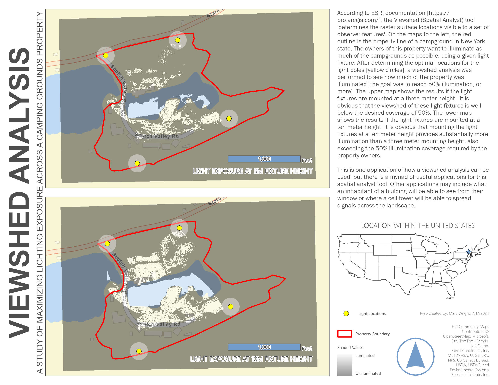

3-D Visualization
This project involved completing four ESRI Academy web courses [Introduction to 3D Visualization, Line of Sight Analysis, Viewshed Analysis, and Sharing 3D Content]. These courses served as an introduction to the 3D capabilities of ArcGIS, including the difference in various 3D map scenes [Local and Global] and the 3D symbology that is included in the software package.

In the first module, we were provided with all the required data to create a realistic, three-dimensional map of San Diego, California.

The second tutorial covers Line of Sight [LOS] analysis - a visualization of which points along a line are visible from a given observation point. This scenario [shown above] focused on determining adequate security coverage for a parade route through downtown Philadelphia, PA. Two observation points were selected, and the LOS analysis shows how much of the route is visible from each; together, they provide strong visual coverage across the parade's path.

While Line of Sight Analysis function executes among points or along lines, Viewshed Analysis evaluates geographic areas - typically 360° from the observation point [unless set differently in the user parameters]. In the third tutorial, campground property owners wanted to illuminate their site using two specific lighting fixtures; the fixtures locations were known, but the required mounting height to achieve at least 50% illumination was not. As shown in the map above, a viewshed analysis was performed at heights of 3 meters and 10 meters; the 10-meter height exceeds the illumination requirement, while the 3-meter height is substantially lower.

The fourth and final tutorial was taking what was taught in the previous modules [specifically the Introduction to 3D Visualization Tutorial] and sharing it to the web. The final product was an interactive 3D landscape of Portland, Oregon that was published to the ArcGIS Online.